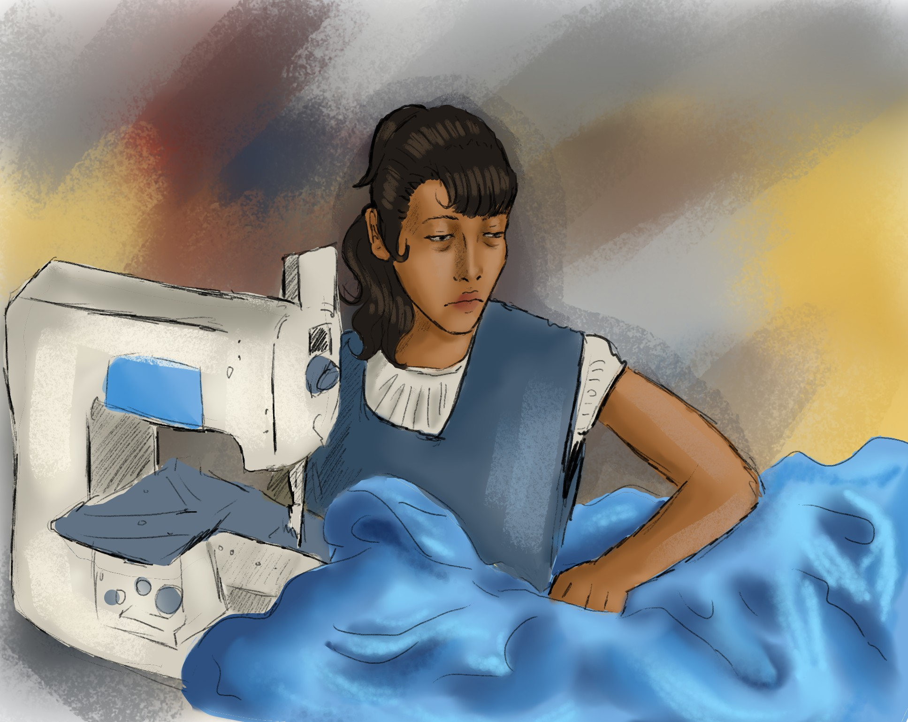

About us
Our Mission
We are here to make sustainability easy, stylish, and fun! Think of us as your friendly digital hub for finding awesome places to swap and revamp your clothes in Amsterdam. Our mission? Help you keep your wardrobe fresh without adding a single thing to the landfill. We believe fashion doesn’t have to come at the planet’s expense, so we’re mixing things up with smart swaps and creative upcycling.
Why?
The horrors of fast fashion
Fast fashion may be cheap and convenient, but its cost to the planet and the people behind the clothes is staggering. From toxic waste dumped into waterways to workers facing dangerous conditions and unfair wages, the fashion industry often comes with a hidden price tag.
Upcycle and swap clothing instead!
By choosing upcycling and garment swapping, you’re joining a movement to make fashion fairer and greener. Even small changes, like reimagining your clothes or swapping with friends, help reduce waste and support more sustainable habits. Every little step counts toward a cleaner, kinder world! :)